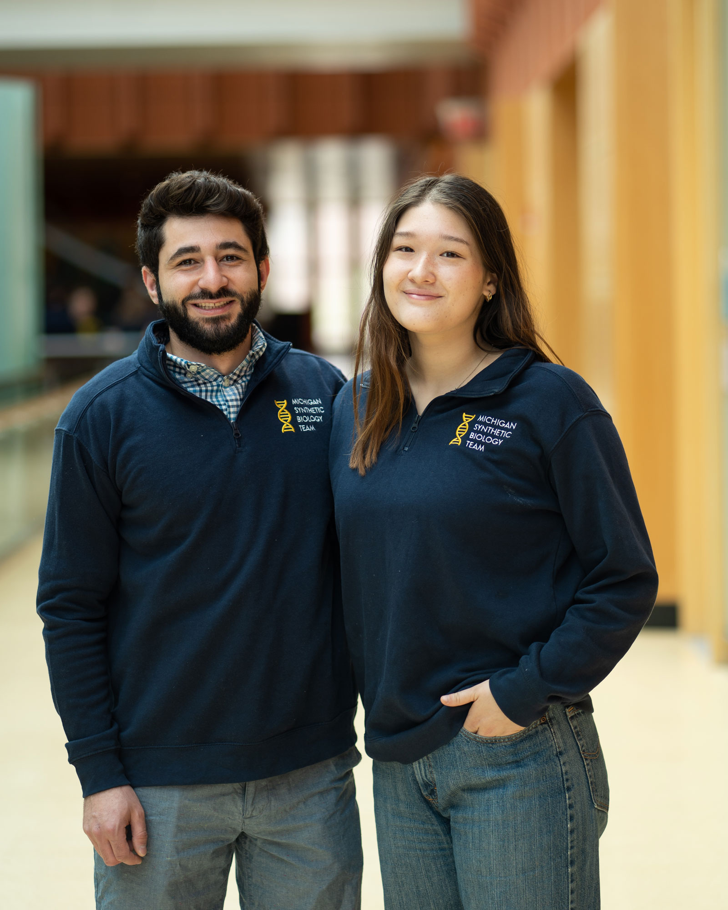
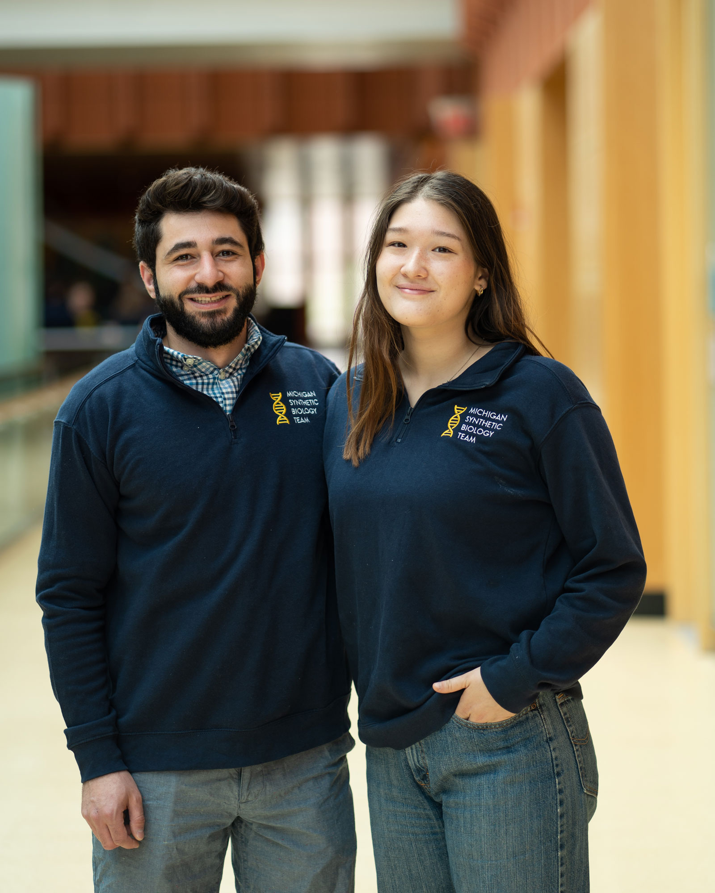

We are... Biologists Chemists Scientists Engineers MSBT!
 

Who We Are
The Michigan Synthetic Biology Team provides students the opportunity to gain hands on experience in conducting scientific research, running a laboratory, engineering novel biological systems, fundraising, public outreach, leadership, and working as part of a multidisciplinary team. Every year, the team competes in the International Genetically Engineered Machine (iGEM) jamboree competition in Paris.
What is Synthetic Biology?
Synthetic Biology combines biology and engineering to design, construct, and test biological devices and systems. Combining these two disciplines allows us to better understand life and use that understanding to benefit society. Synthetic Biology is distinct from Genetic Engineering in that the latter only alters existing genes, whereas the former utilizes existing, modified, and man-made genes to make life perform useful functions not normally found in nature. Through synthetic biology, it may be possible to solve some of the world's most challenging problems such as energy shortage, environmental pollution, and disease. However, we must be wary of potential safety and ethical issues along the way.
What is iGem?
iGEM is an international undergraduate synthetic biology competition. In 2015, iGEM consisted of 259 teams and 2700 participants from all over the world. Every year, teams research, design, construct, and test a novel biological system. Students have at their disposal bits of DNA from the iGEM Registry of Standard Biological parts to help aid them in building their biological “machine”. In addition, students are encouraged to build their own parts and develop new techniques to make life easier to engineer. Teams also help to increase awareness for synthetic biology through public outreach and analyze safety concerns as a part of the project design process. Projects are wide ranging and are divided into the following categories: Environment, Food and Nutrition, Energy, Foundational Advance, Health and Medicine, Information Processing, Manufacturing, Software Tools, and New Applications. Visit the iGem website for more information.
Who can Join?
Any undergraduate student with an interest in synthetic biology and biological engineering is welcome to join! Students will become acquainted with the theory and techniques during weekly meetings from February to the end of winter semester, at which point we will transition to working on the year's project, continuing into the spring, summer, and following fall semester, until our competition in late October. To join, applications start in the middle of January!
Awards
- Gold Medal, iGEM 2022 Competition
- Gold Medal, Global Open Genetic Engineering Competition 2023
2023 Project
Point-of-Care rs773902 Genetic Testing to Inform Antiplatelet Pharmacotherapy
PAR4 is a platelet receptor that causes blood clotting when activated. A prevalent point mutation in the gene for this receptor makes commonly prescribed antiplatelet therapies less effective; however, alternative, unaffected options are available. We will develop an accessible test for this mutation that can be performed in a physician's office using isothermal DNA amplification and a fluorescent marker.